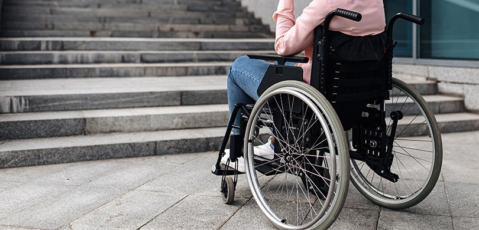
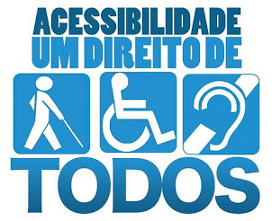
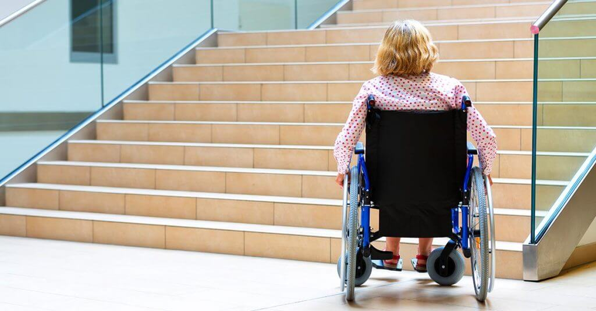

Pessoas com atrofia muscular espinhal
enfrentam falta de acessibilidade e de acolhimento.
Falta de conhecimento da sociedade sobre a doença e dificuldades para o acesso ao diagnóstico,
tratamento e suporte ainda são desafios para a rotina de pessoas com atrofia muscular espinhal no Brasil. 
Mais de 14 mil eleitores com deficiência
mudam local de voto por acessibilidade.
Para poder votar em locais atendam às necessidades,
eleitores precisaram fazer o requerimento de transferência temporária junto ao TSE. 
Senado aprova PEC que coloca mobilidade e
acessibilidade na Constituição.
Proposta acrescenta os termos "acessibilidade" e "mobilidade" ao artigo 5º,
que trata dos direitos fundamentais e deveres individuais e coletivos dos brasileiros. 
Caso de falta de acessibilidade na COP26
ilustra obstáculos para inclusão.
Neste episódio do E Tem Mais, Carol Nogueira descreve desafios que pessoas
com deficiência enfrentam para ter direitos e maior participação na vida pública.
Ampliar acesso de pessoas com deficiência à tecnologia
é luta antiga, diz especialista.
À CNN, Marcus Kerekes avaliou que relatório da ONU chama a atenção para discrepância
entre países mais pobres e mais ricos na tecnologia assistiva.